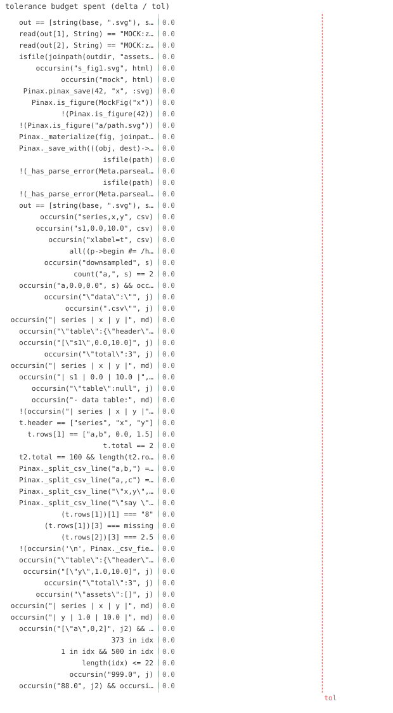

59/59 passed · 2.9s
| id | label | got | want | Δ vs tol (kind) | |
|---|---|---|---|---|---|
| ✓ | t22 | out == [string(base, ".svg"), string(base, ".pdf")] @ test_backends_ext.jl:40 code | 1.0 | 1.0 | 0.0 vs 0.5 (abs) |
| ✓ | t23 | read(out[1], String) == "MOCK:z:svg" @ test_backends_ext.jl:41 code | 1.0 | 1.0 | 0.0 vs 0.5 (abs) |
| ✓ | t24 | read(out[2], String) == "MOCK:z:pdf" @ test_backends_ext.jl:42 code | 1.0 | 1.0 | 0.0 vs 0.5 (abs) |
| ✓ | t25 | isfile(joinpath(outdir, "assets", "figures", "p", "s", "s_fig1.svg")) @ test_backends_ext.jl:54 code | 1.0 | 1.0 | 0.0 vs 0.5 (abs) |
| ✓ | t26 | occursin("s_fig1.svg", html) @ test_backends_ext.jl:55 code | 1.0 | 1.0 | 0.0 vs 0.5 (abs) |
| ✓ | t27 | occursin("mock", html) @ test_backends_ext.jl:56 code | 1.0 | 1.0 | 0.0 vs 0.5 (abs) |
| ✓ | t28 | Pinax.pinax_save(42, "x", :svg) @ test_backends_ext.jl:60 code | 1.0 | 1.0 | 0.0 vs 0.5 (abs) |
| ✓ | t29 | Pinax.is_figure(MockFig("x")) @ test_backends_ext.jl:64 code | 1.0 | 1.0 | 0.0 vs 0.5 (abs) |
| ✓ | t30 | !(Pinax.is_figure(42)) @ test_backends_ext.jl:65 code | 1.0 | 1.0 | 0.0 vs 0.5 (abs) |
| ✓ | t31 | !(Pinax.is_figure("a/path.svg")) @ test_backends_ext.jl:66 code | 1.0 | 1.0 | 0.0 vs 0.5 (abs) |
| ✓ | t32 | Pinax._materialize(fig, joinpath(tmp, "bad"), [:svg]) @ test_backends_ext.jl:73 code | 1.0 | 1.0 | 0.0 vs 0.5 (abs) |
| ✓ | t33 | Pinax._save_with(((obj, dest)->begin #= /home/runner/work/Pinax.jl/Pinax.jl/test/test_backends_… @ test_backends_ext.jl:77 code | 1.0 | 1.0 | 0.0 vs 0.5 (abs) |
| ✓ | t34 | isfile(path) @ test_backends_ext.jl:85 code | 1.0 | 1.0 | 0.0 vs 0.5 (abs) |
| ✓ | t35 | !(_has_parse_error(Meta.parseall(read(path, String); filename = f))) @ test_backends_ext.jl:86 code | 1.0 | 1.0 | 0.0 vs 0.5 (abs) |
| ✓ | t36 | isfile(path) @ test_backends_ext.jl:85 code | 1.0 | 1.0 | 0.0 vs 0.5 (abs) |
| ✓ | t37 | !(_has_parse_error(Meta.parseall(read(path, String); filename = f))) @ test_backends_ext.jl:86 code | 1.0 | 1.0 | 0.0 vs 0.5 (abs) |
| ✓ | t38 | out == [string(base, ".svg"), string(base, ".csv")] @ test_backends_ext.jl:100 code | 1.0 | 1.0 | 0.0 vs 0.5 (abs) |
| ✓ | t39 | occursin("series,x,y", csv) @ test_backends_ext.jl:102 code | 1.0 | 1.0 | 0.0 vs 0.5 (abs) |
| ✓ | t40 | occursin("s1,0.0,10.0", csv) @ test_backends_ext.jl:103 code | 1.0 | 1.0 | 0.0 vs 0.5 (abs) |
| ✓ | t41 | occursin("xlabel=t", csv) @ test_backends_ext.jl:104 code | 1.0 | 1.0 | 0.0 vs 0.5 (abs) |
| ✓ | t42 | all((p->begin #= /home/runner/work/Pinax.jl/Pinax.jl/test/test_backends_ext.jl:112 =# … @ test_backends_ext.jl:112 code | 1.0 | 1.0 | 0.0 vs 0.5 (abs) |
| ✓ | t43 | occursin("downsampled", s) @ test_backends_ext.jl:124 code | 1.0 | 1.0 | 0.0 vs 0.5 (abs) |
| ✓ | t44 | count("a,", s) == 2 @ test_backends_ext.jl:125 code | 1.0 | 1.0 | 0.0 vs 0.5 (abs) |
| ✓ | t45 | occursin("a,0.0,0.0", s) && occursin("a,9.0,9.0", s) @ test_backends_ext.jl:126 code | 1.0 | 1.0 | 0.0 vs 0.5 (abs) |
| ✓ | t46 | occursin("\"data\":\"", j) @ test_backends_ext.jl:137 code | 1.0 | 1.0 | 0.0 vs 0.5 (abs) |
| ✓ | t47 | occursin(".csv\"", j) @ test_backends_ext.jl:138 code | 1.0 | 1.0 | 0.0 vs 0.5 (abs) |
| ✓ | t48 | occursin("| series | x | y |", md) @ test_backends_ext.jl:140 code | 1.0 | 1.0 | 0.0 vs 0.5 (abs) |
| ✓ | t49 | occursin("\"table\":{\"header\":[\"series\",\"x\",\"y\"]", j) @ test_backends_ext.jl:151 code | 1.0 | 1.0 | 0.0 vs 0.5 (abs) |
| ✓ | t50 | occursin("[\"s1\",0.0,10.0]", j) @ test_backends_ext.jl:152 code | 1.0 | 1.0 | 0.0 vs 0.5 (abs) |
| ✓ | t51 | occursin("\"total\":3", j) @ test_backends_ext.jl:153 code | 1.0 | 1.0 | 0.0 vs 0.5 (abs) |
| ✓ | t52 | occursin("| series | x | y |", md) @ test_backends_ext.jl:155 code | 1.0 | 1.0 | 0.0 vs 0.5 (abs) |
| ✓ | t53 | occursin("| s1 | 0.0 | 10.0 |", md) @ test_backends_ext.jl:156 code | 1.0 | 1.0 | 0.0 vs 0.5 (abs) |
| ✓ | t54 | occursin("\"table\":null", j) @ test_backends_ext.jl:167 code | 1.0 | 1.0 | 0.0 vs 0.5 (abs) |
| ✓ | t55 | occursin("- data table:", md) @ test_backends_ext.jl:169 code | 1.0 | 1.0 | 0.0 vs 0.5 (abs) |
| ✓ | t56 | !(occursin("| series | x | y |", md)) @ test_backends_ext.jl:170 code | 1.0 | 1.0 | 0.0 vs 0.5 (abs) |
| ✓ | t57 | t.header == ["series", "x", "y"] @ test_backends_ext.jl:177 code | 1.0 | 1.0 | 0.0 vs 0.5 (abs) |
| ✓ | t58 | t.rows[1] == ["a,b", 0.0, 1.5] @ test_backends_ext.jl:178 code | 1.0 | 1.0 | 0.0 vs 0.5 (abs) |
| ✓ | t59 | t.total == 2 @ test_backends_ext.jl:179 code | 1.0 | 1.0 | 0.0 vs 0.5 (abs) |
| ✓ | t60 | t2.total == 100 && length(t2.rows) <= 10 @ test_backends_ext.jl:182 code | 1.0 | 1.0 | 0.0 vs 0.5 (abs) |
| ✓ | t61 | Pinax._split_csv_line("a,b,") == ["a", "b", ""] @ test_backends_ext.jl:186 code | 1.0 | 1.0 | 0.0 vs 0.5 (abs) |
| ✓ | t62 | Pinax._split_csv_line("a,,c") == ["a", "", "c"] @ test_backends_ext.jl:187 code | 1.0 | 1.0 | 0.0 vs 0.5 (abs) |
| ✓ | t63 | Pinax._split_csv_line("\"x,y\",z") == ["x,y", "z"] @ test_backends_ext.jl:188 code | 1.0 | 1.0 | 0.0 vs 0.5 (abs) |
| ✓ | t64 | Pinax._split_csv_line("\"say \"\"hi\"\"\",z") == ["say \"hi\"", "z"] @ test_backends_ext.jl:189 code | 1.0 | 1.0 | 0.0 vs 0.5 (abs) |
| ✓ | t65 | (t.rows[1])[1] === "8" @ test_backends_ext.jl:194 code | 1.0 | 1.0 | 0.0 vs 0.5 (abs) |
| ✓ | t66 | (t.rows[1])[3] === missing @ test_backends_ext.jl:195 code | 1.0 | 1.0 | 0.0 vs 0.5 (abs) |
| ✓ | t67 | (t.rows[2])[3] === 2.5 @ test_backends_ext.jl:196 code | 1.0 | 1.0 | 0.0 vs 0.5 (abs) |
| ✓ | t68 | !(occursin('\n', Pinax._csv_field("a\nb"))) @ test_backends_ext.jl:197 code | 1.0 | 1.0 | 0.0 vs 0.5 (abs) |
| ✓ | t69 | occursin("\"table\":{\"header\":[\"series\",\"x\",\"y\"]", j) @ test_backends_ext.jl:214 code | 1.0 | 1.0 | 0.0 vs 0.5 (abs) |
| ✓ | t70 | occursin("[\"y\",1.0,10.0]", j) @ test_backends_ext.jl:215 code | 1.0 | 1.0 | 0.0 vs 0.5 (abs) |
| ✓ | t71 | occursin("\"total\":3", j) @ test_backends_ext.jl:216 code | 1.0 | 1.0 | 0.0 vs 0.5 (abs) |
| ✓ | t72 | occursin("\"assets\":[]", j) @ test_backends_ext.jl:217 code | 1.0 | 1.0 | 0.0 vs 0.5 (abs) |
| ✓ | t73 | occursin("| series | x | y |", md) @ test_backends_ext.jl:219 code | 1.0 | 1.0 | 0.0 vs 0.5 (abs) |
| ✓ | t74 | occursin("| y | 1.0 | 10.0 |", md) @ test_backends_ext.jl:220 code | 1.0 | 1.0 | 0.0 vs 0.5 (abs) |
| ✓ | t75 | occursin("[\"a\",0,2]", j2) && occursin("[\"b\",1,5]", j2) @ test_backends_ext.jl:230 code | 1.0 | 1.0 | 0.0 vs 0.5 (abs) |
| ✓ | t76 | 373 in idx @ test_backends_ext.jl:238 code | 1.0 | 1.0 | 0.0 vs 0.5 (abs) |
| ✓ | t77 | 1 in idx && 500 in idx @ test_backends_ext.jl:239 code | 1.0 | 1.0 | 0.0 vs 0.5 (abs) |
| ✓ | t78 | length(idx) <= 22 @ test_backends_ext.jl:240 code | 1.0 | 1.0 | 0.0 vs 0.5 (abs) |
| ✓ | t79 | occursin("999.0", j) @ test_backends_ext.jl:248 code | 1.0 | 1.0 | 0.0 vs 0.5 (abs) |
| ✓ | t80 | occursin("88.0", j2) && occursin("77.0", j2) @ test_backends_ext.jl:261 code | 1.0 | 1.0 | 0.0 vs 0.5 (abs) |

⤓ downloadfig = Pinax.Figure(
:f, "f", "", nothing, () -> MockFig("z"), "code", false, String[], nothing
)
base = joinpath(tmp, "m", "f")
out = Pinax._materialize(fig, base, [:svg, :pdf])
@test out == [string(base, ".svg"), string(base, ".pdf")]@test read(out[1], String) == "MOCK:z:svg"@test read(out[2], String) == "MOCK:z:pdf"outdir = joinpath(tmp, "site")
Pinax.reset!()
html = read(Pinax.render(; out=outdir), String)
@test isfile(joinpath(outdir, "assets", "figures", "p", "s", "s_fig1.svg"))@test occursin("s_fig1.svg", html)@test occursin("mock", html)@test_throws ErrorException Pinax.pinax_save(42, "x", :svg)@test Pinax.is_figure(MockFig("x"))@test !Pinax.is_figure(42)@test !Pinax.is_figure("a/path.svg")fig = Pinax.Figure(
:bad, "bad", "", nothing, () -> 42, "code", false, String[], nothing
)
@test_throws ErrorException Pinax._materialize(fig, joinpath(tmp, "bad"), [:svg])@test_throws ErrorException Pinax._save_with(
(obj, dest) -> nothing, MockFig("x"), joinpath(tmp, "noop"), :svg
)path = joinpath(pkgdir(Pinax), "ext", f)
@test isfile(path)@test !_has_parse_error(Meta.parseall(read(path, String); filename=f))fig = Pinax.Figure(
:f, "f", "", nothing, () -> MockFig("z"), "code", false, String[], nothing
)
base = joinpath(tmp, "f")
out = Pinax._materialize(fig, base, [:svg, :table])
@test out == [string(base, ".svg"), string(base, ".csv")] # image + data tablecsv = read(out[2], String)
@test occursin("series,x,y", csv)@test occursin("s1,0.0,10.0", csv)@test occursin("xlabel=t", csv)@test all(p -> !endswith(p, ".csv"), out)io = IOBuffer()
tbl = (;
xlabel="x",
ylabel="y",
series=[(; label="a", x=collect(0.0:9.0), y=collect(0.0:9.0))],
)
Pinax._print_csv_table(io, tbl, 3) # 10 pts, budget 3, shape-preserving: keep min+max (the
s = String(take!(io)) # endpoints for a monotonic series) -> 2 rows
@test occursin("downsampled", s)@test count("a,", s) == 2@test occursin("a,0.0,0.0", s) && occursin("a,9.0,9.0", s) # the extrema are keptout = joinpath(tmp, "agent")
Pinax.reset!(; title="d")
ap = Pinax.render(; out=out, theme=:agent)
j = read(ap, String)
@test occursin("\"data\":\"", j) # distinct field (not lumped into assets)@test occursin(".csv\"", j) # ...pointing at the csvmd = read(joinpath(out, "agent.md"), String)
@test occursin("| series | x | y |", md) # figure_as_table inlines the data (Phase B)out = joinpath(tmp, "fat")
Pinax.reset!(; title="x")
Pinax.render(; out=out, theme=:agent)
j = read(joinpath(out, "agent.json"), String)
@test occursin("\"table\":{\"header\":[\"series\",\"x\",\"y\"]", j) # the figure's data table@test occursin("[\"s1\",0.0,10.0]", j) # native-typed rows@test occursin("\"total\":3", j)md = read(joinpath(out, "agent.md"), String)
@test occursin("| series | x | y |", md)@test occursin("| s1 | 0.0 | 10.0 |", md)out = joinpath(tmp, "plain")
Pinax.reset!(; title="x")
Pinax.render(; out=out, theme=PlainAgent())
j = read(joinpath(out, "agent.json"), String)
@test occursin("\"table\":null", j)md = read(joinpath(out, "agent.md"), String)
@test occursin("- data table:", md) # referenced, not inlined@test !occursin("| series | x | y |", md)csv = joinpath(tmp, "t.csv")
write(csv, "# meta\nseries,x,y\n\"a,b\",0.0,1.5\nc,2.0,3.0\n")
t = Pinax._read_csv_table(csv)
@test t.header == ["series", "x", "y"]@test t.rows[1] == ["a,b", 0.0, 1.5] # quoted comma; numbers re-typed@test t.total == 2write(csv, "series,x,y\n" * join(["r$i,$i,$i" for i in 1:100], "\n") * "\n")
t2 = Pinax._read_csv_table(csv; maxrows=10)
@test t2.total == 100 && length(t2.rows) <= 10@test Pinax._split_csv_line("a,b,") == ["a", "b", ""] # trailing empty field@test Pinax._split_csv_line("a,,c") == ["a", "", "c"] # empty middle field@test Pinax._split_csv_line("\"x,y\",z") == ["x,y", "z"] # quoted comma@test Pinax._split_csv_line("\"say \"\"hi\"\"\",z") == ["say \"hi\"", "z"] # escaped quotecsv = joinpath(tmp, "edge.csv")
write(csv, "series,x,y\n8,0.0,\n8,1.0,2.5\n") # numeric-looking label + a blank (NaN) y cell
t = Pinax._read_csv_table(csv)
@test t.rows[1][1] === "8" # the series LABEL stays a String (not 8.0)@test t.rows[1][3] === missing # a blank y (a dropped NaN) -> missing, not ""@test t.rows[2][3] === 2.5 # a real number is still re-typed@test !occursin('\n', Pinax._csv_field("a\nb")) # writer flattens newlines (no line-spanning field)tmp = mktempdir()
Pinax.reset!(; title="d")
ap = Pinax.render(; out=joinpath(tmp, "agent"), theme=:agent) # must NOT throw (gen skipped)
j = read(ap, String)
@test occursin("\"table\":{\"header\":[\"series\",\"x\",\"y\"]", j) # table from data=@test occursin("[\"y\",1.0,10.0]", j) # native rows, no CSV round-trip@test occursin("\"total\":3", j)@test occursin("\"assets\":[]", j) # never materialized → no assetmd = read(joinpath(tmp, "agent", "agent.md"), String)
@test occursin("| series | x | y |", md) # inline md table from data=@test occursin("| y | 1.0 | 10.0 |", md)Pinax.reset!(; title="d2")
j2 = read(Pinax.render(; out=joinpath(tmp, "a2"), theme=:agent), String)
@test occursin("[\"a\",0,2]", j2) && occursin("[\"b\",1,5]", j2)ys = [i == 373 ? 999.0 : 1.0 for i in 1:500] # one sharp peak among 500 flat points
idx = Pinax._pick_indices(ys, 20)
@test 373 in idx # the peak's index is kept@test 1 in idx && 500 in idx # endpoints kept@test length(idx) <= 22 # ~budget (+ up to 2 endpoints)Pinax.reset!(; title="peak")
j = read(Pinax.render(; out=joinpath(mktempdir(), "a"), theme=:agent), String)
@test occursin("999.0", j) # uniform stride (every 25th) would drop index 373Pinax.reset!(; title="peak2")
j2 = read(Pinax.render(; out=joinpath(mktempdir(), "b"), theme=:agent), String)
@test occursin("88.0", j2) && occursin("77.0", j2){kind=link}